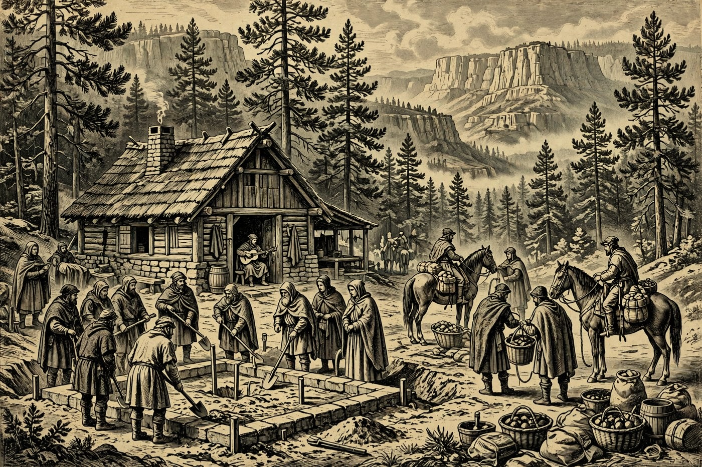
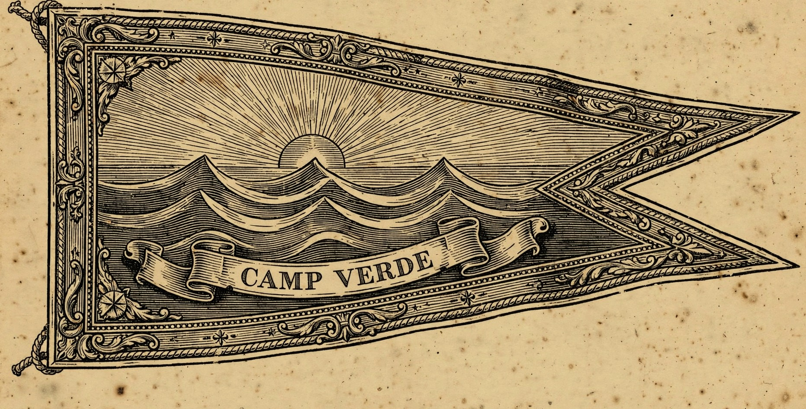

PAYSON — Hail, guest of the Hearth, and a merry Sundas morning to you — the sky hangs grey and cool over the pines, the high reaches only fifty-eight, and no rain stands in the day, so throw on a warm cloak and go see the Holds awake. The week’s best news breaks ground Monday in Payson, where Banner Payson holds a groundbreaking ceremony for its new Cancer Center at 807 S Ponderosa St. Today the Holds feast and make merry: live country music at the Spur Bar, a farmers market under the red rocks in Sedona, a vintage Christmas paint party in Camp Verde, and tonight Alice Cooper himself rocks Prescott Valley. And keep an eye on the gate, traveler — a lonely bull elk came calling Friday night, and his story stands inside.
Happening in the Holds Today
 Payson— Grateful For You, Grateful For Us, Celebrating Oneness — 904 N Beeline Hwy, Suite E, Payson, today at 10:00 AM, also on Zoom. A warm Sunday gathering on gratitude and oneness, led by Sue Lullo, in the heart of the Hold. Come as you are, settle in with neighbors, and start Sundas with a full heart. A gentle hour before the day’s louder doings begin. All are welcome at the table.— Ryan Chrys & the Rough Cuts at Spur Bar — Spur Bar, Star Valley, today from 4:00 to 7:00 PM, free. This Colorado Country Music Hall of Fame Band of the Year brings blazing guitars and outlaw-country spirit in the way of Waylon and Willie, with a rock-and-roll edge all its own. A free afternoon show in a local hall — arrive early for a good seat. Bards of a louder school, and the Hold loves them for it.
Payson— Grateful For You, Grateful For Us, Celebrating Oneness — 904 N Beeline Hwy, Suite E, Payson, today at 10:00 AM, also on Zoom. A warm Sunday gathering on gratitude and oneness, led by Sue Lullo, in the heart of the Hold. Come as you are, settle in with neighbors, and start Sundas with a full heart. A gentle hour before the day’s louder doings begin. All are welcome at the table.— Ryan Chrys & the Rough Cuts at Spur Bar — Spur Bar, Star Valley, today from 4:00 to 7:00 PM, free. This Colorado Country Music Hall of Fame Band of the Year brings blazing guitars and outlaw-country spirit in the way of Waylon and Willie, with a rock-and-roll edge all its own. A free afternoon show in a local hall — arrive early for a good seat. Bards of a louder school, and the Hold loves them for it.
Camp Verde— Mirror, Mirror — a Very Vintage Christmas — The Copper Sparrow, 873 Howards Rd, Camp Verde, today from 2:00 to 4:00 PM, first tickets $39 then $49. Paint a festive Christmas tree on a beautiful vintage mirror and take home a one-of-a-kind piece for your hall. Hors d’oeuvres and drinks are served, and shoppers get 20% off during the event. Space is limited, so bring a friend and claim a seat early. Holiday magic, Verde style.— Verde Valley Pottery Festival — Final Day — D.A. Ranch Vineyards, 1900 Dancing Apache Rd, Cornville, today from 10:00 AM to 3:00 PM, admission free. The festival’s last day is the quiet one: live pottery demonstrations, hands-on clay work for children, local food, live music, and estate wine along Oak Creek. Arizona potters fill the tables with bowls, mugs, and sculpture on a hundred acres of cottonwood shade. A handmade mug to bring home is a quest worth taking. Sedona— Sedona Community Farmers Market — 2201 W SR 89A, Sedona, today from 11:00 AM to 3:00 PM in its winter hours. Regional growers and makers fill the Wells Fargo lot with fresh produce, baked goods, and handmade wares, with live music in the air. This is the Hold’s Sunday table, spread under the red rocks. Come hungry, bring a basket, and talk to the folks who grew your supper. Valley Dwellers up for the weekend will find it worth the ride.— Gabriel & Co. Holiday Trunk Show — Final Day — Renee Taylor Jewelry, Tlaquepaque Arts & Shopping Village, 336 State Route 179, Sedona, today from 10:00 AM to 5:00 PM. Three festive days of jewelry sparkle close today, with Gabriel & Co. experts on hand for custom designs and festive refreshments while you shop. Bring the gift list and find the piece they will treasure for years. Tlaquepaque in the fall light is half the gift already.
Sedona— Sedona Community Farmers Market — 2201 W SR 89A, Sedona, today from 11:00 AM to 3:00 PM in its winter hours. Regional growers and makers fill the Wells Fargo lot with fresh produce, baked goods, and handmade wares, with live music in the air. This is the Hold’s Sunday table, spread under the red rocks. Come hungry, bring a basket, and talk to the folks who grew your supper. Valley Dwellers up for the weekend will find it worth the ride.— Gabriel & Co. Holiday Trunk Show — Final Day — Renee Taylor Jewelry, Tlaquepaque Arts & Shopping Village, 336 State Route 179, Sedona, today from 10:00 AM to 5:00 PM. Three festive days of jewelry sparkle close today, with Gabriel & Co. experts on hand for custom designs and festive refreshments while you shop. Bring the gift list and find the piece they will treasure for years. Tlaquepaque in the fall light is half the gift already. Prescott— Boots and Bows November Market — Prescott, today from 9:00 AM. A fall festival market of small businesses, handmade goods, delicious treats, raffles, prizes, and games, all wrapped in cozy autumn cheer. Shop for Christmas gifts, treat yourself, or just enjoy a family outing among the makers. Every stall is a neighbor’s craft on show. Bring the gift list and a little patience for the happy crowd.— Alice Cooper in Concert — Findlay Toyota Center, 3201 N Main St, Prescott Valley, tonight at 7:30 PM, doors at 6:30 PM. The godfather of theatrical rock brings his Alice’s Attic Tour to the arena a short drive from downtown Prescott. It is the loudest booking of the week by a considerable margin, and Rim Country rock fans will fill the hall. A bard of a very different school, to be sure — but every mead hall honors a legend. Get tickets ahead; this one will not wait at the door.
Prescott— Boots and Bows November Market — Prescott, today from 9:00 AM. A fall festival market of small businesses, handmade goods, delicious treats, raffles, prizes, and games, all wrapped in cozy autumn cheer. Shop for Christmas gifts, treat yourself, or just enjoy a family outing among the makers. Every stall is a neighbor’s craft on show. Bring the gift list and a little patience for the happy crowd.— Alice Cooper in Concert — Findlay Toyota Center, 3201 N Main St, Prescott Valley, tonight at 7:30 PM, doors at 6:30 PM. The godfather of theatrical rock brings his Alice’s Attic Tour to the arena a short drive from downtown Prescott. It is the loudest booking of the week by a considerable margin, and Rim Country rock fans will fill the hall. A bard of a very different school, to be sure — but every mead hall honors a legend. Get tickets ahead; this one will not wait at the door.
The Days Ahead
- Mon, Nov. 16— Banner Payson Cancer Center Groundbreaking — 807 S Ponderosa St, Payson, Monday at 10:00 AM, on the south side of the main building. The Hold gathers to break ground for a new cancer center, changing the landscape of cancer treatment in Payson one shovel at a time. Neighbors who have driven to the Valley for care know exactly what this hall will mean. Come stand with the town for a hopeful morning. This is the week’s best news, by the Nine.
- Tue, Nov. 17— Trail Day Volunteer Build — Pine — Hwy 87, Pine, Tuesday at 7:00 AM. Volunteers gather to build and tend the trails that thread the pines beneath the Rim — the same paths Hearth guests walk all season. Bring your willing hands and spend a morning making the forest road better for everyone who follows. Work like this is how a Hold takes care of its own backyard. Ask the organizers on the day what gear to bring.— Festival of Trees — Prescott — Prescott, Tuesday, November 17 through Saturday, November 21. The beloved holiday festival fills the season’s first week with decorated trees and festive doings in Arizona’s Christmas City. Go early in its run for the full sparkle before the weekend crowds arrive. A fine excuse for a Prescott day trip under the pines. Check the festival’s own page for each day’s hours before you ride.
- Wed, Nov. 18— Rim Country Camera Club Meeting — Payson Library Large Meeting Room, 328 N McLane Rd, Payson, Wednesday from 4:30 to 6:30 PM. The Hold’s photographers gather to share pictures, learn from one another, and talk over the season’s best light on the Rim. New eyes are welcome — bring your curiosity, and a picture or two if you have them. On the same morning, flags rise at 10:00 AM for the Rally Around the Flag Memorial Dedication. A full day for folks who love this place and keep its picture.— Harvest of Dreams Movie & Market Night — St. Anthony Catholic School, 1283 E Owens, Show Low, Wednesday — doors at 5:30 PM, free movie at 6:00 PM. An evening of family fun supporting the school’s 6th–8th grade educational trips, with a loaded potato bar and a Young Entrepreneur Market of student-made creations and treats. Bring the family and help the students turn hard work into unforgettable learning. Good food, a free film, and young makers — a hall full of heart.
- Fri, Nov. 20— Charcuterie Make ’n Take — Holiday Season Edition — 501 W Frontier St, Payson, Friday from 6:00 to 8:00 PM. Build beautiful Thanksgiving- and Christmas-inspired charcuterie boards in a hands-on class, learning the tips and tricks for arranging meats, cheeses, and fruits like a feast-day artist. All supplies and a handmade board are included, and $5 of each registration goes to St. Mary’s Food Bank. Bring your own beverages to enjoy while you create and snack. Register online or in the studio ahead — seats go fast.— Salty Corner — Dry Bar Comedy — 200 W Frontier, Payson, Friday at 7:00 PM, free tickets. The last Salty Corner show of 2026 promises big laughs, great company, and a hall full of neighbors ending the year merry. Follow the show’s Facebook page for when the free tickets drop, and bring friends and family. A bard’s tale is fine, but a jester’s night is better. Arrive early — free seats in this Hold do not stay empty long.
- Sat, Nov. 21— Turkey Trot — Green Valley Park, 1000 W Country Club Dr, Payson, Saturday at 8:00 AM. The annual trot brings prizes for fastest stroller, best themed outfit, and more, with event shirts while supplies last. Sign up at paysonparks.com or at the Parks and Rec office at Green Valley Park. Run, walk, or cheer — the whole Hold turns out. A fine way to earn the feast that follows.— Pre-Cut Stained Glass Christmas Ornament Class — 251 N Penrod Rd, Show Low, Saturday at 11:00 AM. Pick two pre-cut glass ornaments — the glass is cut and ground for you — and learn to copper-foil and solder them into treasures for your tree. This is a beginner’s class, and all materials and tools are provided. Call ahead to reserve your space, as the class is small. Handmade ornaments carry a story no store-bought bauble can match.— Grand Canyon University vs. University of Arizona Hockey — Findlay Toyota Center, Prescott Valley, Saturday at 7:30 PM. College hockey returns as part of the Grand Canyon College Hockey Classic, with the Lopes facing the Wildcats on the ice. Fast, loud, and full of school pride — a very different kind of hall than the morning’s quiet classes. Get tickets ahead through the center. Rim Country sports fans, this one is yours.